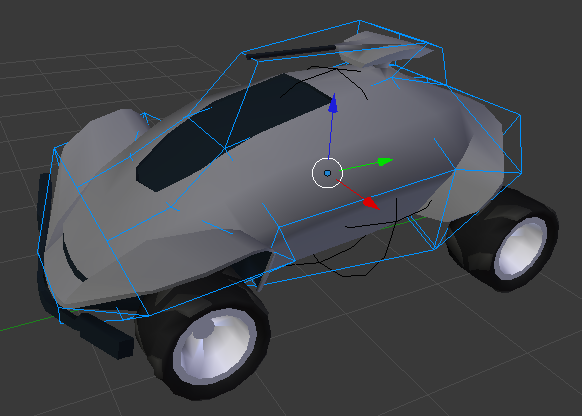

Фізика «Тверде Тіло» -- Rigid Body Physics¶
Probably the most common type of object in the Game Engine. It will give/receive collisions and react with a change in its velocity and its rotation. A rigid body ball would begin rotating and roll down (where a Dynamic ball would only hit and slide down the ramp).
The idea behind rigid body dynamics is that the mesh does not deform. If you need deformation you will need to either go to Soft Body or else fake it with animated Actions.
Детальніше дивіться тут -- physics page.
Опції¶
Ghi chú
Доступ до bpy
Note that, most of these properties are accessible through
the non-BGE scripting API via bpy.data.objects["ObjectName"].game,
which is of type bpy.types.GameObjectSetting. This is useful so you can,
for example, set a range of objects to have gradated values via a for-loop.
- Актор -- Actor
- Вмикає виявлення сенсорами Near та Radar.
- Привид -- Ghost
- Вимикає зіткнення повністю, подібно до No collision.
- Невидимо -- Invisible
- Робить об'єкт не показуваним, так само, як вимкнення для об'єкта здатності рендеритися (вимкнення іконки з камерою в Outliner).
- Вжити Силове Поле Матеріалу -- Use Material Force Field
- Матеріали можуть мати устави фізики на собі також: Тертя -- Friction, Еластичність -- Elasticity, Силове Поле -- Force Field (позитивна або негативна сила), а також Згасання -- Dampening до інших матеріалів. Коли ви вмикаєте цей стяг, то ви дозволяєте Матеріалу проявляти таке пружинне поле.
- Обертати Від Нормалі -- Rotate From Normal
- Todo.
- Без Спання -- No Sleeping
- Запобігає спанню сітей в імітації. Коли об'єкт має лінеарну або кутову скорість, то він знаходиться у русі. Це дасть виявлення зіткнення, прийняття гравітації тощо. Після цього, як ці пороги наближаються до нуля, це дасть припинення цих розрахунків -- допоки інший об'єкт не вступить у взаємодію з ним, розбудивши його.
- Маса -- Mass
- Впливає на реакцію при зіткненні між об'єктами -- більш масивні об'єкти мають більшу інерцію. Це також буде впливати на силові поля матеріалів. Також це буде змінювати поведінку, якщо ви використовуєте такі частини фізики Bullet як підвішування та кермування.
- Радіус -- Radius
- Якщо ви маєте задано явно "Collision Bounds: Sphere" (або неявно через вимкнену панель Collision Bounds), то це буде множитися на масштаб (незастосований) Scale такого Об'єкта. Зауважте, що жоден з інших типів меж не задіюється. Також, зверніть увагу, що у 3D Огляді показ буде буде для усіх типів, навіть хоча фактично це використовується тільки з типом Sphere.
| Базово | Радіус=1.5 | Незастосований Масштаб | Застосований Масштаб | Межі Зіткнення -- Collision Bounds |
|---|---|---|---|---|
| Вертіння, радіус 1 BU | Вертіння, радіус 1.5 BU (після «виставляння» уверх) | Вертіння, радіус 1 BU | Вертіння, радіус 1 BU (!) | Стандартно (це Sphere) |
| Сковзання, протяг 1 BU | Сковзання, протяг 1 BU | Сковзання, протяг 1 BU | Сковзання, протяг 1 BU | Коробка -- Box |
| "" | "" | "" | "" | Опукла Оболонка -- Convex Hull |
| Сковзання, протяг 1 BU (але з більшим тертям, ніж вище) | Сковзання, протяг 1 BU (але з більшим тертям, ніж вище) | Діє ненормально | Сковзання, протяг 1.5 BU | Трибічна Сіть -- Triangle Mesh |
- Фактор Форми -- Form Factor
- Для впливу тензора інерції -- Inertia Tensor. Чим вище це значення, тим більша обертальна інерція і звідси більший опір до крутного моменту. Ви можете подумати, що це дивно, що типи Dynamic не мають крутного моменту у відповідь на зіткнення -- але ви можете все ще бачити впливи цього значення, коли вручну застосовуєте Крутний момент -- Torque.
- Анізотропне Тертя -- Anisotropic Friction
- Ізотропне тертя є ідентичним в усіх кутах. Анізотропія є залежною від напрямку. Тут ви можете варіювати коефіцієнтами для трьох осей індивідуально або повністю вимкнути тертя.
- Скорість -- Velocity
Ліміт швидкості об'єкта.
- Мінімум -- Minimum
- Об'єкту дозволяється бути повністю у спокої, але як тільки він прискорюється, то він негайно стрибне у цю мінімальну швидкістю.
- Максимум -- Maximum
- Найвища швидкість об'єкта.
- Згасання -- Damping
Збільшує «млявість» об'єкта.
- Пересування -- Translation
- Опирання переміщенню (0 - 1). В 1 об'єкт є повністю нерухомим.
- Обертання -- Rotation
- Опирання обертанню, але це не вид обертання, що походить від зіткнення. Наприклад, якщо Контролер Motion застосовує Torque до об'єкта, то це згасання буде фактором.
- Блокувати Пересування -- Lock Translation
- Схоплює об'єкт у світі уздовж однієї чи кількох осей. Зауважте, що це глобальні координати, на локальні чи інші.
- Блокувати Обертання -- Lock Rotation
- Тільки для Rigid Body -- Так само, але для обертання (також відносно глобальних координат).
Межі Зіткнення -- Collision Bounds¶
Перша річ, яку ви повинні розуміти, -- це ідея межової або Габаритної Коробки -- 3D Bounding Box. Якщо ви пройдете через усі вершини сіті та запишете найнижчі та найвищі значення X, ви знайшли x min/max повної границі для усіх значень X у межах сіті. Зробіть це знову для Y та Z, далі зробіть прямокутну призму з цих значень і ви маєте габаритну коробку -- Bounding Box. Ця коробка може бути орієнтована глобально відносно світу або локально відносно обертання об'єкта.

Демонстрація Локальної Габаритної Коробки (зліва) та Глобальної Габаритної Коробки (справа).
Далі, протяг x extent -- це половина відстані між x min/max.
При цьому всьому ви повинні бути обізнані про початок об'єкта -- Object Origin. Для рушія Game engine, стандартні Shift-Ctrl-Alt-C, 3 чи навряд чи дадуть бажане поміщення Меж Зіткнення, як ви бажаєте. Натомість, ви повинні, як правило, задати початок, змінивши у нижній частині Tool Shelf після задіяння команди Set Origin для опції Center значення з Median Center на Bounds Center. Blender запам'ятає цю зміну для майбутніх виконань Shift-Ctrl-Alt-C.
Усі Межі Зіткнення центруються на цьому початку. Усі коробки орієнтуються локально, а тому має значення обертання об'єкта.

Установлення початку у Bounds Center замість Median Center.
Фінальний ввідний коментар: Коли ви установлюєте Collision Bounds на об'єкті, Blender спробує показати візуалізацію цих меж у формі пунктирного контуру. Поточно це вада: 3D View не показує передогляд цих меж там, де він фактично буде у ході гри. Щоб бачити його, увімкніть та віднайдіть білу (або зелену, при спанні) геометрію.
Тепер, ми можемо пояснити різні опції для устав Collision Bounds:
- Стандартно -- Default
- Для об'єктів з типами Dynamic та Static це є Трибічникова Сіть -- Triangle Mesh (дивіться нижче). Для всього іншого -- це Сфера -- Sphere (дивіться нижче).
- Капсула -- Capsule
- Що є циліндром з півсферичними торцями, як пігулка. Радіус цих півсфер є більшим від протягу X чи Y. Висота -- це межі по Z.
- Коробка -- Box
- Габаритна коробка по X, Y, Z, як визначено вище.
- Сфера -- Sphere
- Радіус визначається масштабом об'єкта (видимий в регіоні N Properties), а не радіусом фізики (може бути знайдений у ). Примітка: Це єдині межі, на які діє опція Radius.
- Циліндр -- Cylinder
- Радіус є більшим, ніж протяг X або Y. Висота -- це межі по Z.
- Конус -- Cone
- Базовий радіус є більшим, ніж протяг X або Y. Висота -- це межі по Z.
- Опукла Оболонка -- Convex Hull
Формує обгортальну, спрощену геометрію навколо об'єкта.

Обрис опуклою оболонкою.
- Трикутникова Сіть Сіть -- Triangle Mesh
- Більш ресурсозатратно, але й більш точно. Зіткнення будуть відбуватися з усіма тріангульованими полігонами, замість використання віртуальної сіті для приблизного імітування такого зіткнення.
- Межі вручну -- By Hand
Це не опція в уставах Collision Bounds вкладки Physics, а цілком інший підхід зроблення меж зіткнення. Ви створюєте другу сіть, яка є невидимою, що буде представленням фізики. Вона стане предком для вашого показуваного об'єкта. Далі, ваш показуваний установлюється як Ghost, щоб він не боровся з цим предківським об'єктом. Цей метод дозволяє вам отримати баланс між точністю Triangle Mesh та ефективністю деяких інших. Дивіться демо цього на ілюстрації з баггі.
Інший спосіб створення Collision Bounds -- Вручну.
{kind=link}
Опції¶
Є тільки дві опції на панелі Collision Bounds.
- Припуск -- Margin
«Додає додатковий припуск навколо об'єкта для виявлення зіткнення, вимагається мала величина для стабільності». Якщо ви виявите, що ваші об'єкти застрягли у місцях, де вони не повинні це робити, спробуйте збільшити це, скажімо, до 0.06.
Інколи 0.06 є стандартом (наприклад, для Стандартного Куба), а іноді і ні. Ви повинні стежити за цією уставою або вивчити симптоми, щоб ви могли реагувати, коли це спричиняє проблему. Якщо ви ліниві/параноїдальні/невпевнені/ретельні/надокучливі, ви можете завжди виконувати це на консолі Python Console для вибивання усіх припусків від 0.0 до 0.06: для
objвbpy.data.objects:obj.game.collision_margin = obj.game.collision_marginабо 0.06- Поєднання -- Compound
- «Додає нащадків для формування складеного об'єкта зіткнення». Базово, якщо ви маєте нащадковий об'єкт та не увімкнули це, то зіткнення цього нащадка не буде впливати на «родину» об'єкта (хоча він все ще штовхатиметься іншими об'єктами навколо). Якщо ви увімкнули це, то фізика предка буде реагувати на зіткнення нащадка (звідси, оновиться уся родина).
Створити Перешкоду -- Create Obstacle¶
Todo